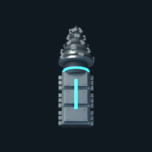
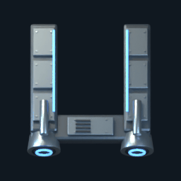
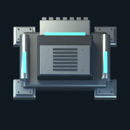
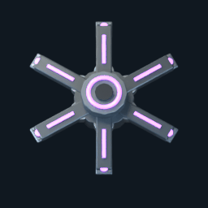
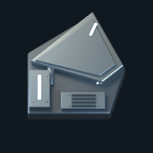
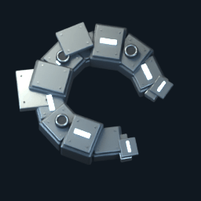

Tunneler

drill rotation / 0.8s cycle
Native256px Blender frames. Local moving parts preserve the ground pivot. Playback periods are provisional and need live reduced-motion/event integration. This is model animation evidence, not gameplay acceptance.

drill rotation / 0.8s cycle

launch rail compression / 1.0s cycle

processing jaw / 1.2s cycle

radial probe reach / 1.6s cycle

ram recoil / 0.8s cycle

accretion feeding clamps / 2.0s cycle